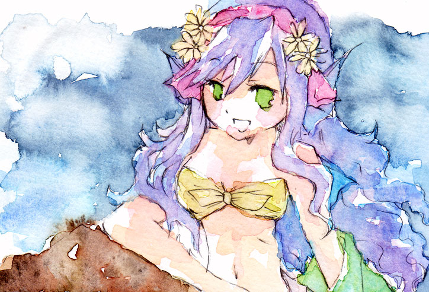
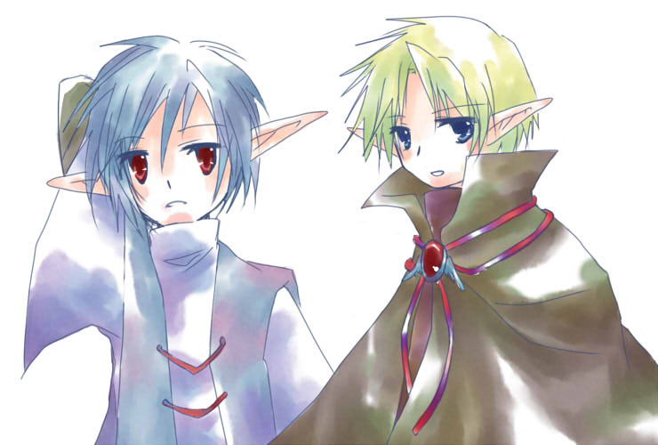
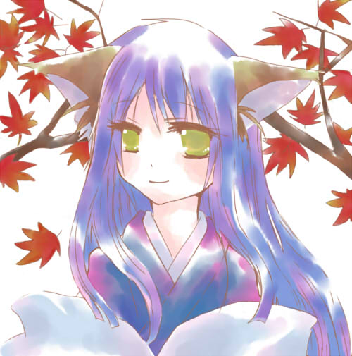

blog / illust / memo / link / information / message / webclap
2007年頃作ったっぽいメイキング発掘。ふぉとしょぽとぺいんた8つこうてる。
変なリプレイさんは心のアイドル

illust
{kind=link}
{kind=link}
{kind=link}
{kind=link}
{kind=link}
{kind=link}
{kind=link}
{kind=link}
{kind=link}
{kind=link}
{kind=link}
{kind=link}
{kind=link}
{kind=link}
  
{kind=link}
{kind=link}
{kind=link}
{kind=link}
{kind=link}
{kind=link}
{kind=link}
{kind=link}
{kind=link}
サムネイルくりっこで大きいイラストが出ます。
memo
booklist
読んでる
日本思想という病 [1/21-]
[1/21-]
カウンセリング・心理療法の基礎 [12/31-]
[12/31-]
「自己発見」の心理学 [10/25-10/29][11/12-]
[10/25-10/29][11/12-]
バカ丁寧化する日本語
孤独であるためのレッスン
読み終わり
<2010年>
会社が嫌いになったら読む本 [5/8-5/15]
[5/8-5/15]
子どもは好きに育てていい [5/6-5/8]
[5/6-5/8]
いやな気分の整理学 [4/20-5/6]
[4/20-5/6]
こころの格差社会 [3/24-4/20]
[3/24-4/20]
ニッポンには対話がない [3/10-3/19]
[3/10-3/19]
論理力をつける [2/10-2/23]
[2/10-2/23]
新版 カウンセリングの話 [2/5-2/10]
[2/5-2/10]
Twitter社会論 [1/27-2/4]
[1/27-2/4]
<2009年>
人間関係がラクになる心理学 愛蔵版 [11/1-1/1]
[11/1-1/1]
なぜ若者は「半径1ｍ以内」で生活したがるのか? [12/23-1/1]
[12/23-1/1]
日本を滅ぼす教育論議 [12/16-12/22]
[12/16-12/22]
考えないヒント [12/6-12/15]
[12/6-12/15]
不安を生きる [12/2-12/6]
[12/2-12/6]
〈つきあい〉の心理学 [11/2-11/11(2回目)]
[11/2-11/11(2回目)]
「なりたい自分」になる心理学 [10/29-10/31]
[10/29-10/31]
自己変革の心理学—論理療法入門 [10/17-10/25]
[10/17-10/25]
非社会性の心理学 [10/15-10/17]
[10/15-10/17]
「自己発見」の心理学[10/25-10/29]
カウンセリング心理学入門
自分の小さな「箱」から脱出する方法
意外に日本人だけ知らない日本史
日本思想という病
カウンセリング・心理療法の基礎
「自己発見」の心理学
バカ丁寧化する日本語
孤独であるためのレッスン
読み終わり
<2010年>
会社が嫌いになったら読む本
子どもは好きに育てていい
いやな気分の整理学
こころの格差社会
ニッポンには対話がない
論理力をつける
新版 カウンセリングの話
Twitter社会論
<2009年>
人間関係がラクになる心理学 愛蔵版
なぜ若者は「半径1ｍ以内」で生活したがるのか?
日本を滅ぼす教育論議
考えないヒント
不安を生きる
〈つきあい〉の心理学
「なりたい自分」になる心理学
自己変革の心理学—論理療法入門
非社会性の心理学
「自己発見」の心理学
カウンセリング心理学入門
自分の小さな「箱」から脱出する方法
意外に日本人だけ知らない日本史
読みたい・読む予定
「依存する人」を「変化を起こす人」にどう育てるか
計算力を強くする
「子供のために」を疑う
「相対性理論」を楽しむ本
ジョブズ流仕事術
iPhoneをつくった会社
新教養主義宣言
なぜあの人の解決策はいつもうまくいくのか?
日本のモノづくりはいつの時代も世界のお手本なんです。
発達障害の子どもたち
99・9%は仮説 思いこみで判断しないための考え方
ひとりでは生きられないのも芸のうち
考えることの科学—推論の認知心理学への招待
カウンセリングの技法
カウンセリングの理論
カウンセリングの原理
どんなことがあっても自分をみじめにしないためには
カウンセラーのための6章—カウンセリング・マインドの展開
自分を変える心理学
20代、自分に自信をつける心理学
〈自立〉の心理学
自己分析
カウンセリング・リサーチ入門—調査・研究の方法
死ぬときに後悔すること25
マンガの創り方—誰も教えなかったプロのストーリーづくり
影響力の法則—現代組織を生き抜くバイブル
続・影響力の法則—ステークホルダーを動かす戦術
もう一度読みたい
自己変革の心理学—論理療法入門
「依存する人」を「変化を起こす人」にどう育てるか
計算力を強くする
「子供のために」を疑う
「相対性理論」を楽しむ本
ジョブズ流仕事術
iPhoneをつくった会社
新教養主義宣言
なぜあの人の解決策はいつもうまくいくのか?
日本のモノづくりはいつの時代も世界のお手本なんです。
発達障害の子どもたち
99・9%は仮説 思いこみで判断しないための考え方
ひとりでは生きられないのも芸のうち
考えることの科学—推論の認知心理学への招待
カウンセリングの技法
カウンセリングの理論
カウンセリングの原理
どんなことがあっても自分をみじめにしないためには
カウンセラーのための6章—カウンセリング・マインドの展開
自分を変える心理学
20代、自分に自信をつける心理学
〈自立〉の心理学
自己分析
カウンセリング・リサーチ入門—調査・研究の方法
死ぬときに後悔すること25
マンガの創り方—誰も教えなかったプロのストーリーづくり
影響力の法則—現代組織を生き抜くバイブル
続・影響力の法則—ステークホルダーを動かす戦術
もう一度読みたい
自己変革の心理学—論理療法入門
information
::管理してる人::永倉あやか or みこ、み、みこるなど
::サイトについて::
イラストと日記による趣味サイトです。
リンクフリーです。報告は特にいりません。
相互希望の方は、フォームまたはブログにてご連絡ください。
URL：http://clovernotes.net/naya/
バナー:http://clovernotes.net/naya/ban.png
message form
何かありましたらどうぞー。返信が必要な方は、メールアドレス記入してくださいね。
特に何も書いていない場合、blogなどでお返事します。